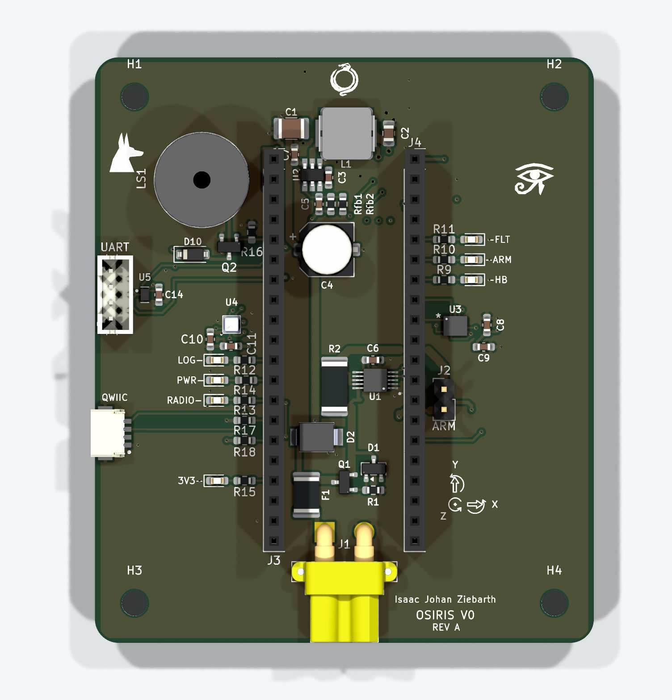

OSIRIS flight computer
My own flight computer design, kept apart from UQ Space's boards as a learning project. The first board, V0, is a 4-layer bench model whose schematic passes KiCad's electrical rules check (ERC) and whose layout passes its design rules check (DRC) with 0 violations.
- My role
- Sole designer
- When
- May 2026 – present
- Tools
- KiCad, STM32F411, ISM330IS, BMP581, INA228
- Code
- Private repository for now
Meet the board
Point at a part, or tab through the list, to find it on V0. Number 7 sits on the underside.

- 1IMUISM330IS six-axis IMU
- 2BarometerBMP581 pressure sensor
- 3Power monitorINA228 current and voltage monitor
- 43.3 V buckTPS54302 regulator with a 4.7 µH inductor
- 5Battery inputXT30, 2S to 4S, behind a fuse, a TVS diode and a reverse-polarity FET
- 6Module socketsTwo 20-pin rows for the plug-in STM32F411 module
- 7microSDHirose socket on the underside
The problem
I wanted to learn flight computer design from the ground up, on a board of my own.
What I built
- V0 is a 63 × 74 mm, 4-layer carrier board I designed in KiCad. It takes a plug-in STM32F411 module.
- The board carries an ISM330IS IMU, a BMP581 barometer, an INA228 power monitor, a 3.3 V buck regulator and a microSD socket.
- A fuse, a TVS diode and a reverse-polarity FET protect the 2S to 4S battery input.
- The second board is a larger design around a bare STM32H743, with GNSS, Ethernet, 4 pyro channels and an eFuse.
Specifications
| Board | 63 × 74 mm, 4 layers (V0) |
|---|---|
| Controller | Plug-in STM32F411 module |
| Sensors | ISM330IS IMU, BMP581 barometer |
| Power | INA228 monitor, 3.3 V buck, 2S–4S input with fuse, TVS and reverse-polarity FET |
| Storage | microSD |
| Parts | 70 placed: 52 on top, 18 underneath |
Result
The second board's schematic passes ERC as well; its routing is unfinished.
What went wrong
A design review found that the USB and battery supplies could fight each other on V0. I work around it with a bench rule for now, and the fix is planned for the next revision.
What's next
- The next revision separates the USB and battery supplies properly.
- I have not written firmware for either board yet.